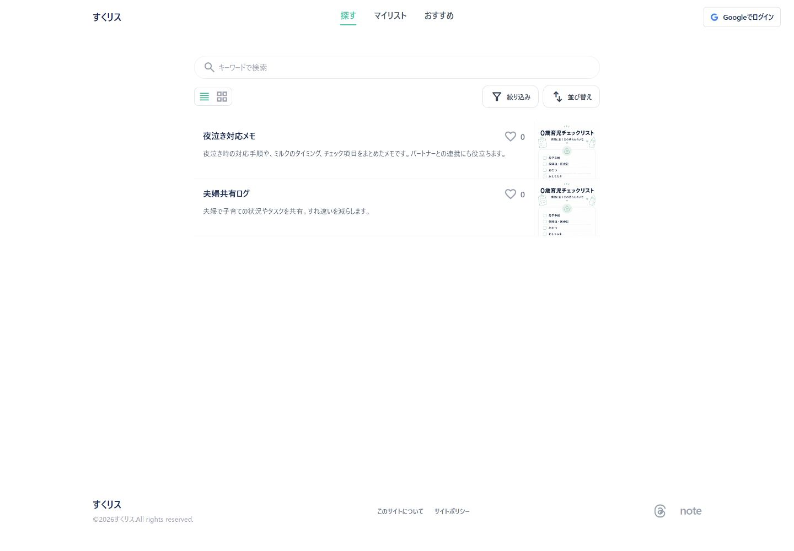
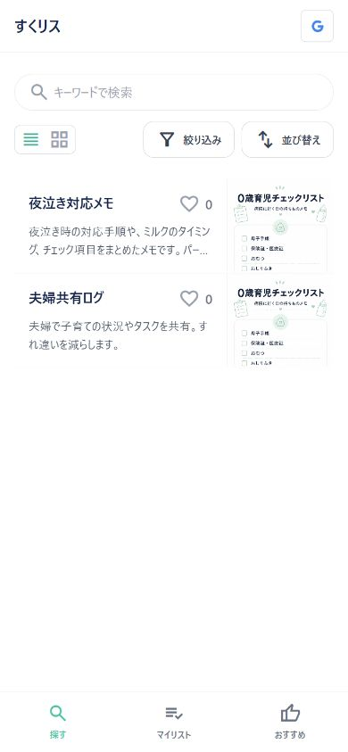
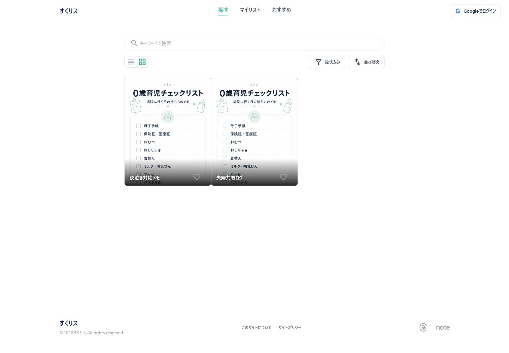
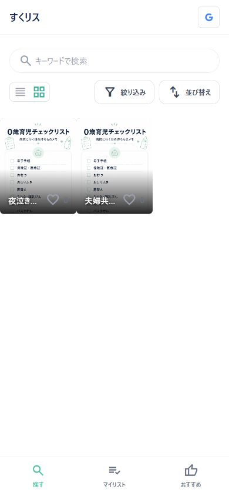
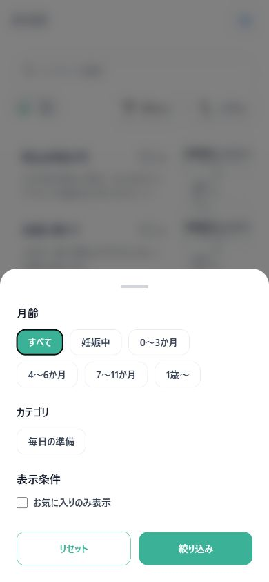
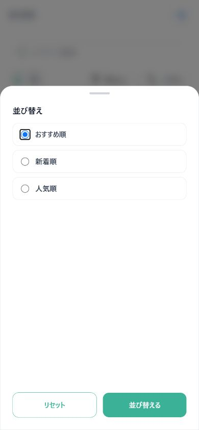

Current local implementation specification
探すページ（PC / SP）
公開チェックリストを検索・絞り込み・並び替えし、headline_view と grid_view を切り替える画面。
この資料は、実際の localhost:4321 をPC/SPビューポートで撮影し、現在のAstro実装とクライアント側の動作を仕様として整理したものです。画像はキャプチャ時点の端末データ・公開データを反映します。
1. 画面の目的と導線
公開チェックリストを探す入口です。PCでは上部ヘッダー、SPでは画面下の固定ナビから「探す」に戻ります。カードをタップ／クリックするとチェックリスト詳細モーダルを開きます。
公開一覧
/ または公開 /knowhow/...。公開カードは端末のマイリスト状態とは独立して表示します。
ログイン
右上のGoogleログイン導線は認証操作を行うボタンです。本キャプチャではログイン操作を実行していません。
2. 実画面キャプチャ

公開一覧の標準リスト表示。ヘッダー、検索、表示切替、絞り込み、並び替えを確認できる。

SP固定ナビとカードのリスト表示。

画像カードを横方向に並べるグリッド表示。

SPでも画像カードを2列で表示。公開一覧では削除UIは出ない。

画面下端から上へ開くフィルターシート。

画面下端から上へ開く並び替えシート。絞り込みと同じ下端基準のアニメーション。
3. view（表示形式）
| 状態 | 見た目 | 操作とURL | 保存 |
|---|---|---|---|
| headline_view | タイトル・説明・いいね・画像を横長の一覧カードで表示。 | リスト表示ボタン。正規URLは ?mode=headline_view。 | IndexedDB settings の knowhow-display-mode に保存。 |
| grid_view | 画像を主役にしたカードを2列で表示。カード下部にタイトルといいねを重ねる。 | 画像表示ボタン。正規URLは ?mode=grid_view。 | 同じ表示モード設定に保存。URLのmodeがある場合はURLを優先。 |
| 公開一覧の削除 | 端末に保存済みのカードはheadline_viewで左スワイプ削除できる。grid_viewでは削除操作を持たせない。 | ||
4. 検索・絞り込み・並び替え
検索
- 検索文字列はタイトルと説明文に対して小文字化した部分一致。
- 入力後250msのデバウンスでカードの表示を更新。
- 検索文字列はURLやIndexedDB settingsには保存しない。
絞り込み
- 月齢：すべて／妊娠中／0〜3か月／4〜6か月／7〜11か月／1歳〜。
- カテゴリ（場面）とお気に入りのみ表示を組み合わせる。
- 条件はAND。適用後はactive chipで確認・個別解除できる。
| 操作 | 仕様 | URL・状態 |
|---|---|---|
| 絞り込みシート | SP/PCとも下端から上へ表示。ハンドル、背景クリック、Escape、SPの下スワイプで閉じる。 | phase、scene、myのdeletedのみURLへ反映。お気に入りと検索は画面状態。 |
| 並び替え | おすすめ順／新着順／人気順。シートは画面下端から上へ表示。 | おすすめ＝timelineOrder昇順、新着＝公開日降順、人気＝いいね数降順。並び順自体はURLやsettingsへ保存しない。 |
| リセット | 絞り込み条件・お気に入り・削除済み条件・検索を初期状態へ戻す。 | URLのphase／scene／deletedも削除。 |
5. データのキャッシュ・保存法則
- 公開カードの原稿はAstro content collectionからビルド時に静的生成。ページ操作ごとに公開カードをAPI取得し直さない。
- 表示モードはIndexedDB
likethis-privatev2のsettingsキーknowhow-display-mode、選択月齢はknowhow-selected-phaseに保存。 - URLに明示された
mode／phase／sceneは保存設定より優先。検索・並び替えはリロードで初期値へ戻る。 - いいね件数は接続可能ならSupabaseから取得。接続不能時は件数0へフォールバックし、匿名ユーザーの押下状態はIndexedDBの
article_likesから復元する。 - 端末データの保存期限（TTL）は設けず、ブラウザーのサイトデータを削除するまで保持する。
6. 実装上の根拠
src/components/KnowhowIndexPage.astro：URL、view切替、検索、phase／scene／お気に入り、sheet、並び替え、公開／マイリスト判定。src/scripts/private-db.ts：IndexedDB名・version、runs/settings/article_likes、legacy localStorage移行、保存・削除。src/styles/list-sheet.css：全コンテンツの絞り込み／並び替えを下端に固定する共通CSSと250msの上方向アニメーション。src/scripts/article-likes.ts：Supabaseいいね件数と匿名いいね状態の取得・フォールバック。